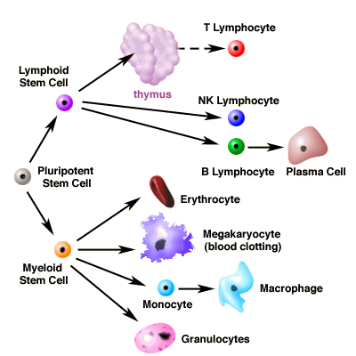

|
Tutorial to help answer the question:
Expectant parents now have the option to save their baby's
"cord blood" (blood from the umbilical cord) immediately following birth.
This cord blood can be transplanted into individuals whose blood has been damaged
by diseases such as leukemia, Hodgkin's lymphoma, and sickle cell anemia. Saved
cord blood is a perfect match for the baby it came from, and can also be useful
in treating relatives of the baby. What cells should be harvested from the cord
blood to best treat patients with blood diseases?
| A. |
Erythrocytes (red blood cells) |
| B. |
Leukocytes (granulocytes, monocytes and lymphocytes) |
| C. |
Stem cells |
Tutorial
Hematopoietic stem cells
| In humans, the immune system begins to develop in the embryo.
The immune system starts with hematopoietic (from Greek, "blood-making")
stem cells. Stem cells differentiate into the major players
in the immune system (granulocytes, monocytes, and lymphocytes).
Stem cells also differentiate into cells in the blood that are
not involved in immune function, such as erythrocytes (red blood
cells) and megakaryocytes (for blood clotting). Stem cells continue
to be produced and differentiate throughout your lifetime. Cord
blood is an excellent source of stem cells. The figure below
is a summary of stem cell differentiation. |
|  |
| By the time a baby is born, the immune system is a sophisticated collection
of tissues that includes the blood, lymphatic system, thymus, spleen, skin, and
mucosa. |
|